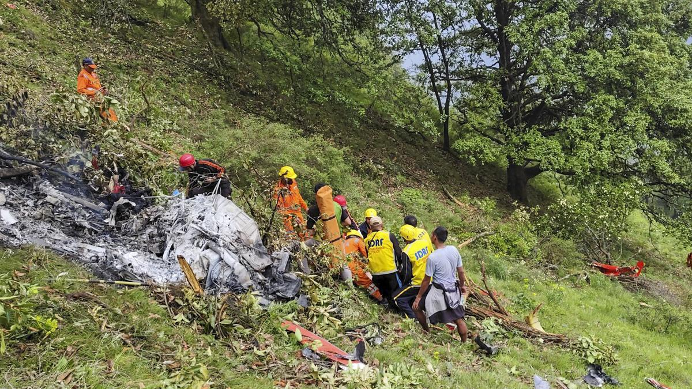

Family Tragically Killed in Helicopter Crash Near Shkoder
By Balkan Times Staff | August 15, 2025
Authorities in northern Albania confirmed on Friday that a tragic helicopter accident occurred in the mountains just north of Shkoder late on the night of August 14. The crash claimed the lives of an entire family traveling onboard.
Rescue teams reached the remote site early in the morning after local residents reported hearing a loud impact during the night. Officials described the wreckage as severely damaged and scattered across a steep mountainside.
The victims’ names have not yet been officially released, pending notification of relatives. Investigators are currently examining weather conditions and mechanical issues as possible causes of the crash.
Prime Ministerial spokespersons expressed condolences, calling the event “a profound tragedy for the nation.” An official investigation is now underway.